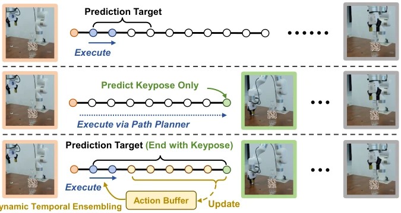
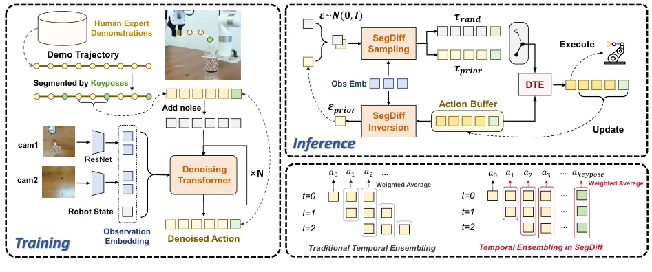
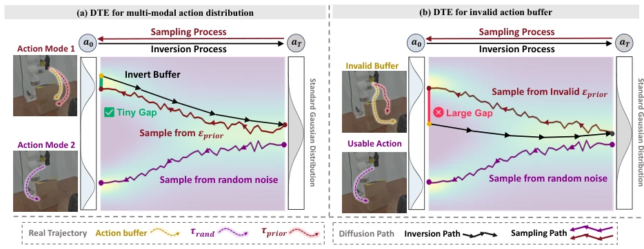
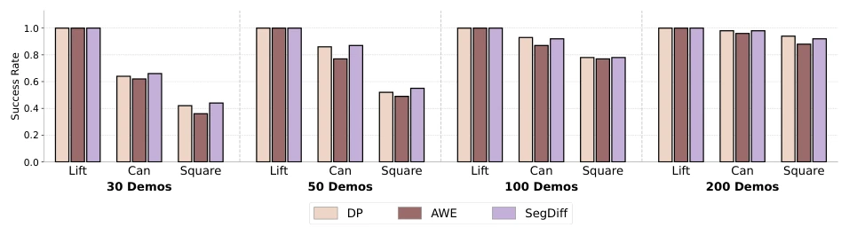
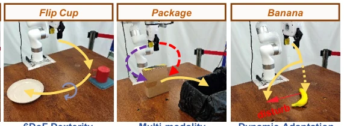
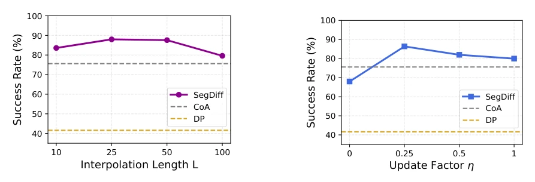
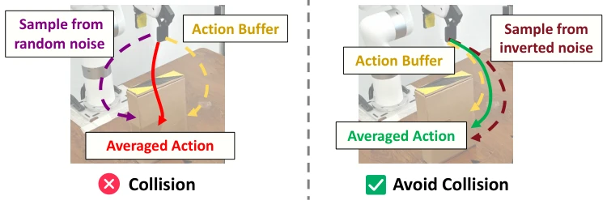
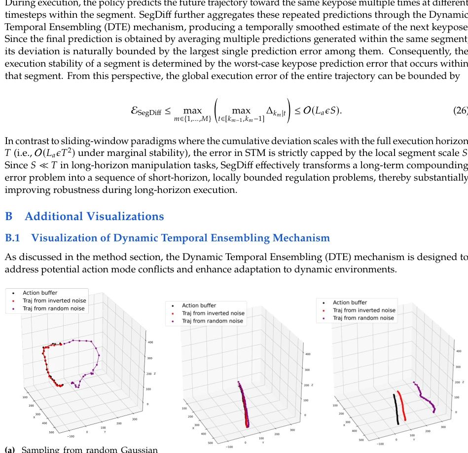
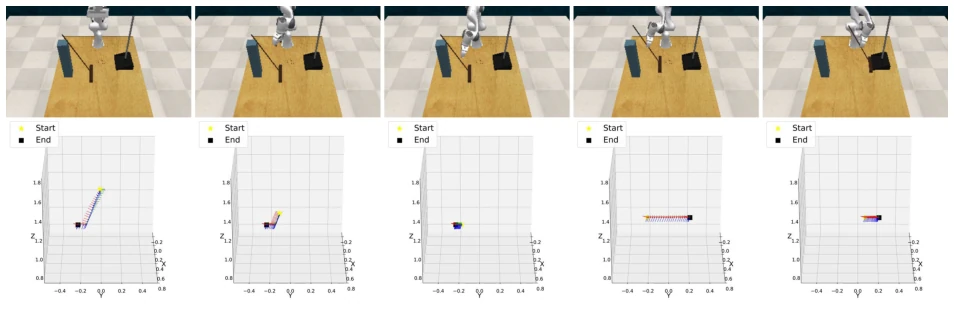
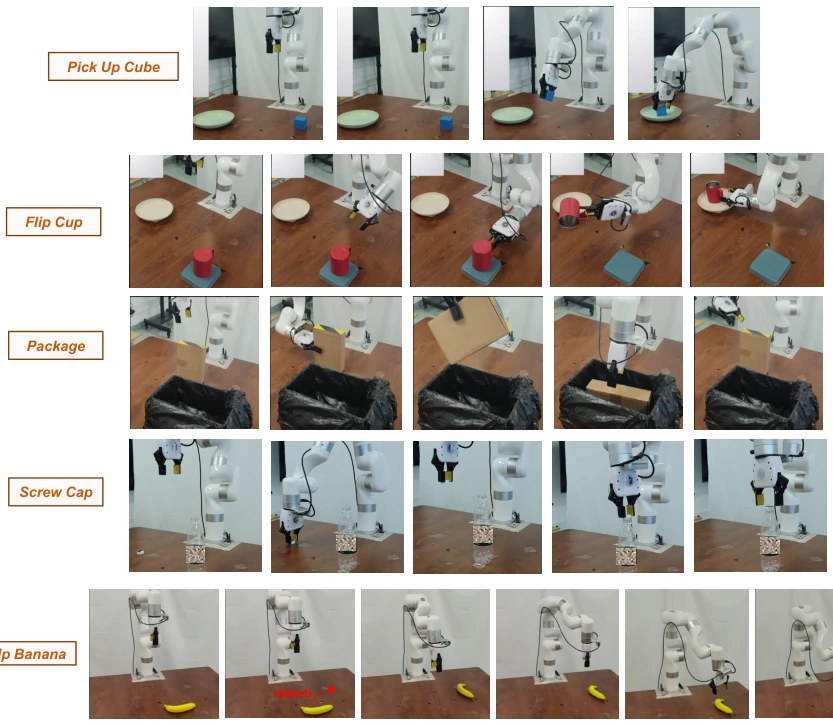

这篇论文给 Diffusion Policy 加了个“导航锚点”，试图解决长视距规划中的误差累积问题。SegDiff 的核心是把轨迹切成段，每段都盯着下一个关键点（keypose）跑，理论上能减少误差累积。不过，它最骚的操作是用 DDIM inversion 来做动态时间集成，试图解决多模态动作的切换问题。说实话，这招在仿真里挺灵，但在真实世界里，如果关键点提取不准，或者环境变化太剧烈，这个“动态”机制会不会变成“动态翻车”？毕竟依赖预定义的关键点是个硬伤，自动化提取还没搞定，算是半自动化时代的妥协之作。此外，虽然推理速度仅增加约 5%，但 DDIM inversion 的额外开销在高频控制下仍需谨慎考量。
This paper adds a "navigation anchor" to Diffusion Policy, attempting to solve the error accumulation problem in long-horizon planning. The core of SegDiff is to cut trajectories into segments, each focusing on running towards the next keypoint (keypose), theoretically reducing error accumulation. However, its most distinctive technique employs DDIM inversion for dynamic temporal integration, attempting to address the multi-modal action switching issue. To be honest, this approach works well in simulation, but in the real world, if keypoint extraction is inaccurate or environmental changes are too drastic, will this "dynamic" mechanism turn into "dynamic failure"? After all, relying on predefined keypoints is a fatal flaw; automated extraction is not yet resolved, making it a compromise of the semi-automation era. Furthermore, although inference speed increases by only about 5%, the additional overhead of DDIM inversion still requires careful consideration under high-frequency control.
Existing imitation learning (IL) is mainly divided into two schools: continuous prediction (e.g., Diffusion Policy [9]) is prone to error accumulation (compounding errors) due to myopia; keypoint prediction (e.g., PerAct [38]) is accurate but relies on external planners, with poor real-time performance. Hybrid methods often have complex architectures or cannot handle multi-modal action distributions. The authors point out that continuous methods averaging actions in multi-modal scenarios lead to blurring or even dangerous behaviors, while keypoint methods lack closed-loop adaptability. Therefore, a method that can perform both long-horizon planning and real-time adaptation to dynamic environments is needed. Especially when tasks involve multiple actionable action modes, existing methods struggle to maintain consistency and are prone to generating unsafe behaviors during mode switching.

Figure 1 Comparison of conventional continuous prediction methods, keypose prediction methods, and SegDiff. SegDiff combines the advantages of both paradigms by enforcing keypose constraints within continuous trajectory generation via Segmented Trajectory Modeling, while improving action consistency and real-time responsiveness through Dynamic Temporal Ensembling.
The overall process is divided into training and inference. In the training phase, keypoints (keyposes) are first extracted from expert demonstrations, and trajectories are segmented into multiple sub-segments. The model learns to predict continuous trajectories from the current state to the next keypoint (Segmented Trajectory Modeling, STM), rather than fixed-length action sequences. In the inference phase, Rolling Horizon Control (RHC) is adopted, executing the initial part of the predicted trajectory, with the remainder stored in an action buffer. The core innovation is Dynamic Temporal Integration (DTE): utilizing DDIM inversion [40] to invert buffer actions into noise, generating prior candidate trajectories. Simultaneously, another candidate is generated from random noise. By calculating RMSE thresholds to judge buffer validity and mode consistency, the system dynamically decides whether to fuse, retain, or discard the buffer. This ensures fast mode switching when the environment changes, while maintaining smooth actions when stable. Specifically, if the buffer fails, it is discarded; if there is a mode conflict, switching is suppressed.

Figure 2 Overview of SegDiff. During training, demonstration episodes are segmented by keyposes, and the model learns to predict the complete trajectory from the current state to the next keypose (Segmented Trajectory Modeling). During inference, DDIM inversion [40] generates a prior-informed candidate, allowing Dynamic Temporal Ensembling (DTE) to produce a trajectory that adapts to the current observation while maintaining temporal consistency for execution and buffer update.

Figure 3 Comparison between sampling from noise inverted from action buffer and from random noise. If there exists a large gap between action buffer and the action sampled from the inverted noise, we discard the action buffer as unusable.
On RLBench and RoboMimic simulation benchmarks, comparisons were made with ACT [54], DP [9], CoA [52], Octo [53], etc. SegDiff improved the average success rate by 11.1% on 10 RLBench tasks, with obvious advantages especially in precision tasks like Turn Tap. Real-world testing covered 5 tasks (e.g., Banana dynamic adaptation, Package multi-modal). In the Package task, SegDiff achieved a 100% success rate, while DP failed due to mode oscillation. Ablation studies show DTE is crucial in real-world dynamic scenarios, but offers limited improvement in simple simulation tasks. Additionally, performance is best when interpolation length L=25, and update factor η needs to balance smoothness and responsiveness.

Figure 6 Success rate on RoboMimic with varying numbers of demonstrations.

Figure 7 Demonstrations and design of real-world tasks.

Figure 9 Results on different interpolation length (𝐿) and update factor (𝜂).
其他图片Other Figures

Figure 4 Mode switching in model predictions can lead to undesirable actions (left), whereas sampling from the inverted noise provides a consistent alternative (right).

Figure 10 Illustrations of issues encountered during inference with diffusion-based policies and how Dynamic Temporal Ensembling handles them.

Figure 11 Visualization of the predicted pose trajectory in Segmented Trajectory Modeling (STM). The prediction always targets at the next keypose, ensuring focused modeling of the trajectory toward task-critical points.

Figure 12 Visualization of the complete processes of real-world tasks.